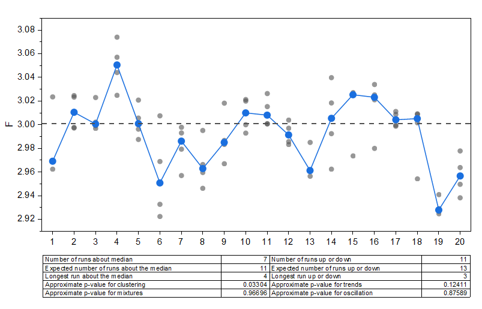

最低1つの列を選択してランチャートを作成します。複数列の場合、各行は1つのサブグループです。
データを選択します。
メニューから、作図 > 統計: ランチャートを選択して、plot_runchartダイアログを開きます。
| データレイアウト | データ配置に応じてレイアウトを選択します。
|
| 入力 | 入力データを選択します。
|
| サブグループ | このコントロールは、すべてのサブグループを1つの列にレイアウトの場合にのみ使用可能です。入力データをどのようにサブグループ化するか、サンプルサイズまたは参照列を指定します。 |
| サイズ | すべてのサブグループを1つの列にレイアウトでサブグループ=サイズの時に使用可能です。データを何行ごとにグループ化するかを指定します。 |
| サブグループラベル | すべてのサブグループを1つの列にレイアウトでサブグループ=サイズの時に使用可能です。各サブグループにラベルを付けるための列を指定します。 |
| 列 | すべてのサブグループを1つの列にレイアウトでサブグループ=列の時に使用可能です。入力データをグループ化するための参照列を指定します。 |
| 接続線 | サブグループの平均値または中央値を線で接続するかを選択します。 |
| グラフテーブルに統計情報を表示 | グラフ上に統計結果を表形式で表示するかどうかを指定します。 |
| グラフテンプレート | ランチャートをプロットするテンプレートを指定します。
デフォルトでは、組み込みテンプレートRunchart が使用されます。自動チェックボックスをオフにすると、保存済みのユーザテンプレートを選択して適用することができます。 |
| 出力 | プロット用のデータを出力するシートを指定します。 |
| グラフ出力 | 結果グラフを出力するシートを指定します。 |
Runchart.OTPU(Originのプログラムフォルダにインストールされています)
ランチャート は、「ランシーケンスプロット」とも呼ばれ、一定期間または継続的なプロセスにおいて、収集されたデータの傾向やパターンを調べるために使用されます。このチャートを使うことで、時間経過に伴う傾向、変化、周期的な動きを監視したり、プロセス内における特異な変動（特別要因によるばらつき）の兆候を分析したりできます。
Originのランチャートは、指定されたサブグループごとにデータをプロットします。各サブグループには、同じ時点で観測されたデータが含まれます。すべての観測値は縦方向に並んだドットとして表示されます。各サブグループの平均値または中央値が、折れ線+散布図として時系列上にプロットされます。入力データ全体の平均または中央値を基準とした水平破線が参照線として追加されます。